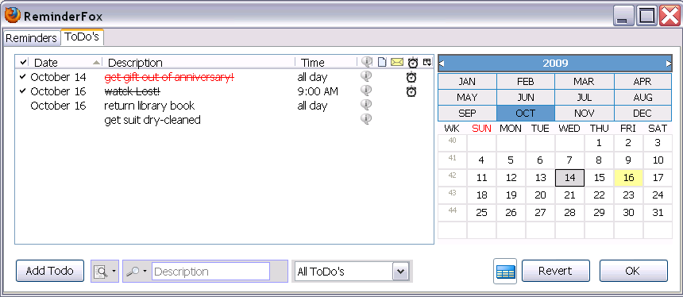
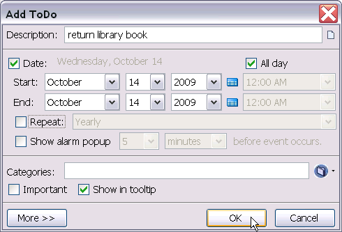

ToDo's
ToDo's are good for tasks that may or may not have a specific start date or completion date. example: "Need to sign up for gym membership". There is a separate tab for ToDo items. The ToDo list and columns are very similar to the Reminders List:

At the bottom of the ToDo's tab, click Add ToDo.

Adding a ToDo is just like adding a reminder. It has essentially the same options as reminders. Unlike reminders, entering a date for ToDo's is optional. In addition there is an option to Show In Tooltip. If you select this, then that ToDo will show up in the tooltip when you hover over the ribbon icon in the status bar. You may want to keep certain ToDo or List items that you don't really want to see in the tooltip all the time, so you can unselect this option in that case.
Editing ToDo's
You can modify ToDo items by right-clicking on them to bring up the context menu. Select the action that you want. Additionally, you can double-click a ToDo to bring up the Edit ToDo dialog.
- Edit ToDo - Allows you to edit all of the properties of the ToDo.
- Delete ToDo - Deletes the ToDo from your list.
- Move to List - Moves the selected ToDo to any other list. If the ToDo has a date set, you can also move it to the Reminders list.
- Important Toggles the ToDo's important status. This is to give emphasis to extra-special ToDo's. Important ToDo's will show up highlighted in the list of ToDo's and in the tooltip.
- Complete - ToDo's can be marked as Completed. This is useful for ToDo's that you finish with.
- Show in Tooltip - Toggles whether you want the new ToDo item to be shown in the tooltip when you hover over the ribbon status icon.
- Move ToDo Up/Down - Moves the selected ToDo(s) up or down in the list. This is useful if you like to keep your list of ToDo's sorted by precedence.
- Find - allows you to search for a ToDo containing specific text
- Hide Completed Items - This hides all ToDo's that have been marked complete. This option
overrides your global preferences and only takes affect while viewing the current window.
- View as HTML - this displays your current list of ToDo's in a browser window. This can be used to print your ToDo's